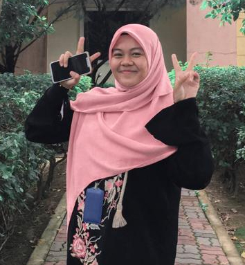
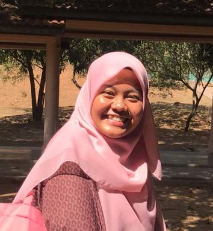
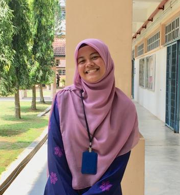
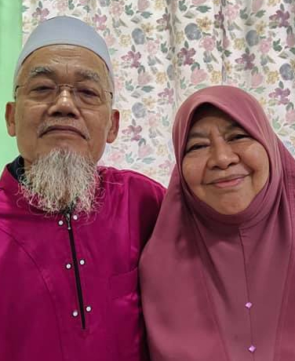
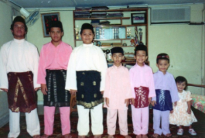

| ABOUT ME | BIODATA | EDUCATION | FAMILY | BESTIES | INTEREST | MEMORIES | CONTACT |
|  |  |  |
Assalamualaikum everyone. My name is Siti Fatimah Zahra binti Azero, you can know me more in the biodata section 😉 Honestly, I'm just a normal girl who have a normal life like everyone else but to be honest I need to admit myself that sometimes I'm not normal. If you know what I mean, you will know it especially if you're a friend of mine 😬 You guys should really guess my age because I'm totally not going to tell my age here HAHAHA sorryyy. Alhamdulillah, I'm 2* years old now (guess my age first okay!!), and alhamdulillah I get to proceed my Degree in UiTM Kedah in Library Management. Also alhamdulillah, at this moment everything went well but sometimes going through some stress is normal too right eventhough we're at home because everyone struggles the same thing as a child of their parents. As for me I can say that I am the #anakharapan at home because I'm the only girl and that my parents rely much things on me at home so I guess there's nothing to say about it, everyone feels the same thing HAHAHA okay so you can definitely know me more by reading my biodata as I tell everything about me there. For my website, I use the theme of pink because I love pink sooooo much that I think it suits me really well hehe. Please have fun in reading my website! Thankyou So Much! ❤️
|  As for this one, I would really love to make an appreciation post that I should have made for my parents. They have sacrifies almost everything they could have done for their children which is definitely I am one of their babies hehe. I am beyond grateful for that. Now that I am old enough, I know what I should aim and that, in life, I just want to make my parents happy with everything I do. I just want to give them happiness like what they are doing to me right now. I want to be a very successful person and so that I can manage to be excellent in everything I do and give them the best I could. I want to be the best of me and give my parents gifts as much as I could as long as I'm still alive. I really want to make them happy in this life and in the Hereafter ❤️ May Allah give me the chance to do everything for my parents, aamiin ❤️ |
|  Next appreciation post is to my siblings. Alhamdulillah, honestly I am more than thankful for having all six of my brothers eventhough honestly all of my brother are sooooo annoying when I was small. Now that we are all grown bigger, I miss them more that I could have been missing them. As I grow older and as they are married, I love my brothers even more and thank you for being there with me when I needed you. Honestly, having many brothers are not a good and as bad as people expected HAHAHAHAHA mean words but still, that's the truth hehe. After having sisters-in-law, my brothers do have some sense towards me as their lil sister and also loving sis-in-laws. I love them so much!! ❤️ |